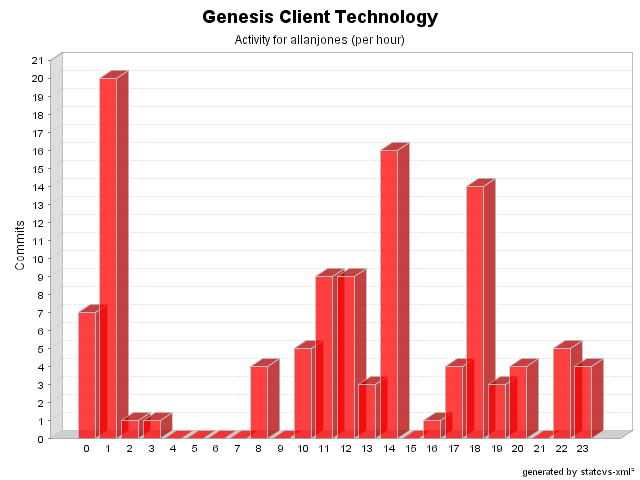

| Login: allanjones Fullname: allanjones Revisions: 110 Lines of Code: 1341 Added Lines of Code: 2350 Lines of Code per Change: 12,2 |

| Date | Author | File/Message |
|---|---|---|
| 22/02/05 03:32 | allanjones | Remove BSF dependency from StartupHelper
(1 Files changed,
1 Lines changed) src/net/java/dev/genesis/helpers/StartupHelper.java 1.3
(+1
-14)
|
| 19/02/05 14:17 | allanjones | Issue #195. Added generic scripting support. Some built-in engines: jxpath, javascript, beanshell and el.
(8 Files changed,
78 Lines changed) src/net/java/dev/genesis/ui/metadata/DataProviderMetadata.java 1.15
(+4
-4)
src/net/java/dev/genesis/ui/metadata/FieldMetadata.java 1.7
(+4
-4)
src/net/java/dev/genesis/helpers/StartupHelper.java 1.2
(+14
-1)
src/net/java/dev/genesis/ui/metadata/FormMetadata.java 1.8
(+13
-7)
src/net/java/dev/genesis/ui/metadata/MethodMetadata.java 1.5
(+4
-5)
src/net/java/dev/genesis/ui/controller/DefaultFormController.java 1.28
(+31
-44)
src/net/java/dev/genesis/ui/metadata/MemberMetadata.java 1.3
(+8
-8)
src/net/java/dev/genesis/commons/jxpath/functions/ExtensionFunctions.java 1.8 removed |
| 13/01/05 00:01 | allanjones | Issue #57. DataProvider now supports widgetName:
e.g.: @DataProvider widgetName=someName objectField=someField indexField=someIndex
Issue #70. DataProvider supports read-only widgets
e.g.: @DataProvider widgetName=someName
Issue #51. DataProvider now handles indexFields. The sequence is that clearOn conditions are evaluated, then callWhenConditions, and then the indexes fields are evaluated.
(6 Files changed,
263 Lines changed) src/net/java/dev/genesis/ui/metadata/FormMetadata.java 1.7
(+39
-9)
src/net/java/dev/genesis/ui/controller/FormControllerListener.java 1.2
(+2
-0)
src/net/java/dev/genesis/ui/thinlet/BaseThinlet.java 1.25
(+26
-0)
src/net/java/dev/genesis/ui/controller/DefaultFormController.java 1.20
(+85
-48)
src/net/java/dev/genesis/ui/metadata/DataProviderMetadata.java 1.10
(+102
-26)
src/net/java/dev/genesis/ui/thinlet/ThinletBinder.java 1.35
(+9
-11)
|
| 12/01/05 23:56 | allanjones | Issue #105. net.java.dev.genesis.ui.ActionInvoker created with static invoke(form, actionName) and static refresh(form).
net.java.dev.genesis.ui.BaseForm created with invoke(actionName) and refresh().
Added new pointcut called formControllerFactoryIntroduction.
(4 Files changed,
88 Lines changed) src/net/java/dev/genesis/ui/paging/BaseSearchForm.java 1.5
(+2
-1)
src/net/java/dev/genesis/ui/BaseForm.java 1.1 added 30 src/net/java/dev/genesis/ui/controller/FormControllerFactory.java 1.1 added 23 src/net/java/dev/genesis/ui/ActionInvoker.java 1.1 added 33 |
| 10/01/05 22:11 | allanjones | Issue #119. Added enabledWidgetGroup and visibleWidgetGroup in addition to widgetGroup.
Some TODOs addressed (issue #130).
(1 Files changed,
60 Lines changed) src/net/java/dev/genesis/ui/thinlet/ThinletBinder.java 1.33
(+60
-53)
|
| 09/01/05 11:37 | allanjones | Issue #124. MethodMetadata / ActionMetadata / DataProviderMetadata are refactored. ActionMetadata and DataProviderMetadata are properties of MethodMetadata.
Issue #123. DataProvider now supports @ClearOn annotation.
(6 Files changed,
147 Lines changed) src/net/java/dev/genesis/ui/metadata/FormMetadata.java 1.6
(+38
-28)
src/net/java/dev/genesis/ui/metadata/MethodMetadata.java 1.3
(+14
-2)
src/net/java/dev/genesis/ui/thinlet/ThinletBinder.java 1.31
(+3
-8)
src/net/java/dev/genesis/ui/metadata/DataProviderMetadata.java 1.8
(+21
-6)
src/net/java/dev/genesis/ui/metadata/ActionMetadata.java 1.5
(+8
-5)
src/net/java/dev/genesis/ui/controller/DefaultFormController.java 1.17
(+63
-52)
|
| 09/01/05 10:58 | allanjones | Issue #101. DisplayOnly removed. To make a property display only, you should not implement a public setter.
(2 Files changed,
10 Lines changed) src/net/java/dev/genesis/ui/metadata/FieldMetadata.java 1.5
(+8
-13)
src/net/java/dev/genesis/ui/thinlet/ThinletBinder.java 1.30
(+2
-2)
|
| 01/01/05 11:42 | allanjones | Issue #135. Added default values to primitive types. If the conversion fails, the default value is used.
Issue #134 address that validation should be performed on the values being displayed, not the values assigned to the form instance, so we can use default value and validate the user input later.
(1 Files changed,
18 Lines changed) src/net/java/dev/genesis/commons/beanutils/ConverterRegistry.java 1.3
(+18
-18)
|
| 28/12/04 02:02 | allanjones | Minor fix. FormControllerEvaluateConditionsTest show us a bug when currentState values map has cleared values due to ClearOn conditions. We need to check both previousState and currentState values map.
(1 Files changed,
4 Lines changed) src/net/java/dev/genesis/ui/controller/DefaultFormController.java 1.16
(+4
-3)
|
| 28/12/04 01:56 | allanjones | Added 'editable' property with isEditable and setEditable functions.
(1 Files changed,
9 Lines changed) src/net/java/dev/genesis/ui/thinlet/BaseThinlet.java 1.21
(+9
-0)
|